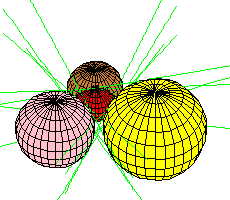

| The Discrepancy: Excess Intersection |
|
9 |

|
When k=0, the case of lines tangent to 4 spheres,
the solution of
Macdonald,
Pach, and
Theobald
used a choice of coordinates which excluded the lines at infinity
and gave a Bézout number of 12.
These pictures complete the proof. |
 | ||
Theorem. (S. & Theobald)
There are 3 2n-1 lines tangent to
2n-2 general spheres in Rn